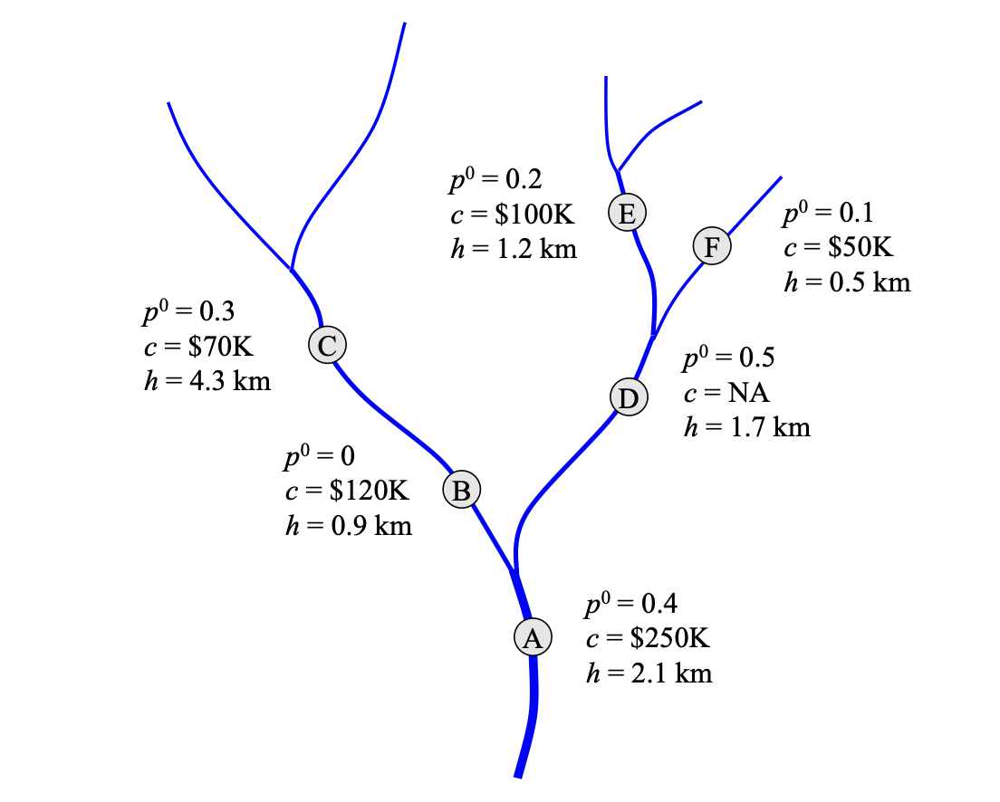

Data Files
All of the data managed by the server is in the static folder. The three types of data are barrier files, target descriptions, and column name mappings, each in a separate subfolder.
Projects
Inside each subfolder there are additional folders for each data set. The name of the folder is the project name.
The GitHub repository includes a project named demo that is based on the examples in the OptiPass user manual (https://www.ecotelligence.net/home/optipass).
Each additional data set will go in its own set of folders. As an example, the server for tide gates on the Oregon Coast has a project named oregon, which leads to this structure:
static
├── barriers
│ ├── demo
│ │ └── ...
│ └── oregon
│ └── ...
├── colnames
│ ├── demo
│ │ └── ...
│ └── oregon
│ └── ...
└── targets
├── demo
│ └── ...
└── oregon
└── ...
Barriers
A barrier file is a table (in CSV format) with one row for each tide gate, culvert, or other object that can restrict the flow of water in a river system.
The first three columns are:
BARID, a unique barrier IDREGION, the name of the region the barrier is in (typically the name of a river system)DSID, the ID of the nearest downstream barrier (OptiPass requires each barrier to have at most one downstream barrier)
The last two columns are
-
COST, the dollar amount for replacing or repairing the barrier (any units can be used, as long as they are all the same) -
NPROJ, an integer that is either 0 or 1 in our data sets. 1 means the barrier should be included an any analysis of the region it belongs to, 0 means the barrier should not included (e.g. this column might be 0 if a barrier is a dam that cannot be replaced or if a landowner does not want it in the data set).
The middle rows of the table has columns that describe restoration targets, described in the next section.
Targets
Each time we run OpitPass we give it a budget value. It will return the IDs of a set of barriers that provide the most benefit for that budget. The barriers it chooses are based on our goals. If the goal is to improve fish migration, the benefits will be an increase in the amount of river habitat in the region upstream from a barrier. If the goal is to protect farmland from flooding, the benefits will be an increase in the amount of acreage protected.
The general term for these goals is restoration target, or simply "target". A file named targets.csv contains descriptions of targets that can be used by the server. The file has one row per target. The columns in the file are:
abbrev, a unique two-letter target ID (which will also be used in the column mapping table, described in the next section)long, a string that is displayed in the GUI shown by a server to allow users to choose targets to useshort, a shorter target name that will be used in tables and plotslabel, a string with units to use on axes in plotsinfra, either True or False, depending on whether this target is for infrastructure such as buildings or farm land (True) or fish migration (False)
Column Maps
In order to use targets we need to quantify the benefits of repairing or replacing barriers. We do this by including three columns in the barrier table for each target:
- The habitat column is the size of the area immediately upstream from a barrier. For fish migration targets, habitat could be expressed as the number of river miles between a barrier and the barrier(s) immediately upstream. If the goal is to protect farmland, habitat could be measured in acres.
- The passability of a barrier is a measure of how much habitat is available upstream from the barrier. It is represented by a number between 0 (no habitat is available upstream) to 1 (all habitat upstream is reachable). The pre-mitigation passability column in the table represents the current passability, before any restoration is done.
- The third column is another passability value, the post-mitigation passability, which is the potential passability after replacing or repairing the barrier.
A data set can have any number of targets. Each target is a separate group of three columns in the table.
A column map table connects column descriptions shown to users (from the targets table) to quantified benefits (in the barriers table). The table has one row for each target. The first column is the target ID (the two-letter abbreviation from the targets table). The remaining columns are the names of columns in the barriers table that have the habitat and passability values for the target.
Example
The small river system used as an example in the OptiPass user manual has six barriers, named A through F. A is at the mouth of the river, and the rest are all upstream from A:

At each node $p^0$ is the pre-mitigation passability, $c$ is the cost to repair the barrier, and $h$ is the habitat (in river kilometers). In this example barrier D is a natural barrier that cannot be replaced, so there is no cost associated with this node.
The figure above shows values for only one target. Later in the manual there is an example that has a second target. We put the data for both targets in our barrier file. Columns HAB1, PRE1, and POST1 are for the first target, and HAB2, PRE2, and POST2 are for the second target. The final data set is in static/barriers/demo/barriers.csv (shown here as a table to make it more readable):
| BARID | REGION | DSID | HAB1 | PRE1 | POST1 | HAB2 | PRE2 | POST2 | COST | NPROJ |
|---|---|---|---|---|---|---|---|---|---|---|
| A | Test1 | NA | 2.1 | 0.4 | 1.0 | 1.68 | 0.6 | 1.0 | 250 | 1 |
| B | Test1 | A | 0.9 | 0.0 | 1.0 | 0.72 | 0.0 | 1.0 | 120 | 1 |
| C | Test1 | B | 4.3 | 0.3 | 1.0 | 3.44 | 0.45 | 1.0 | 70 | 1 |
| D | Test1 | A | 1.7 | 0.5 | NA | 1.36 | 0.75 | NA | NA | 0 |
| E | Test1 | D | 1.2 | 0.2 | 1.0 | 0.96 | 0.3 | 1.0 | 100 | 1 |
| F | Test1 | D | 0.5 | 0.1 | 1.0 | 0.40 | 0.15 | 1.0 | 50 | 1 |
Barrier D is the natural barrier that can't be replaced. The NPROJ column is 0, and it has no cost or post-mitigation values since they aren't used.
The target file for this data set assigns the IDs T1 and T2 to the two targets. For this simple example we just gave them short names and left the other fields blank. The target file instatic/targets/demo/targets.csv looks like this:
| abbrev | long | short | label | infra |
|---|---|---|---|---|
| T1 | Target1 | |||
| T2 | Target2 |
Finally, to connect the target descriptions in the target file to the quantified benefits in the barrier file we have the following column name mapping (static/colnames/demo/colnames.csv):
| abbrev | habitat | prepass | postpass |
|---|---|---|---|
| T1 | HAB1 | PRE1 | POST1 |
| T2 | HAB2 | PRE2 | POST2 |
This tells the server to find data for target T1 in columns HAB1, PRE1, and POST, and the data for target T2 are in HAB2, PRE2, and POST2.
Running OptiPass with the Example Data
To run OptiPass with the sample data, send a GET request to the server, with the following options:
-
use "demo" as the project name
-
use "Test1" as the region name
-
use "T1", "T2", or both as the target name
If testing on the local machine the request will look something like this:
$ curl localhost:8000/optipass?project=demo®ions=Test1&targets=T1,T2&...
where the remaining arguments specify budget levels.
A Note About Scaled Data
A real data set, such as the barrier file for the Oregon Coast, can have a combination of fish passage targets and infrastructure targets. The units for fish passage are river miles (or kilometers or any other linear measure). However, the units for the other targets can be quite different: acres or hectares or other measures of land area for farm land, or miles for roads, or number of buildings.
In order to consider all of these kinds of data in a single optimization run, the units need to be scaled before they are saved in the habitat columns in the barrier file. To allow modelers to save the original unscaled data, the data file formats have additional columns not described above:
- there are four columns for each target, where the additional column is for the unscaled data in its original units; this column is not used by OptiPass, but is there so it can be used for other purposes
- there is an optional column in the colnames table to hold the name of the unscaled data